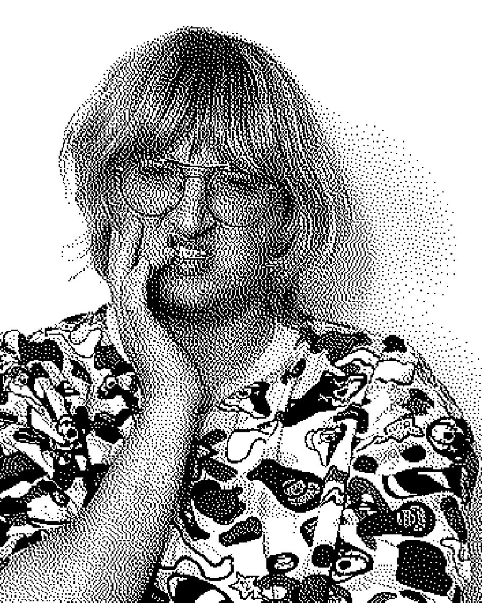

Мелітополь, Україна / КиївMelitopol, Ukraine / Kyiv

@telonovela(він/вони) Мультимедійний художник, квір-анархіст та куратор, народжений 29.10.1999 року з Мелітополя (південь України). У їхній художній практиці приватне-щире та політичне-тригеруюче нероздільні, вони люблять досліджувати перетини таких понять, як: правда та щирість, бути почутим та слухати, присутність та фізична присутність десь через особистий (маргіналізований, квір, травматичний) життєвий досвід.
(he/they) Multimedia artist, queer-anarchist and curator, born 29.10.1999, from Melitopol (southern Ukraine). In their artistic practice private-sincere and political-triggering are inseparable, they like to explore the intersections of such concepts as: truth and sincerity, hearing and listening, presence and being somewhere physically through personal (marginalized, queer, traumatic) life experiences.
ЛГБТК+ та феміністичні рухи, а також технокультура стрімко розвиваються. Водночас люди з цих спільнот зазвичай ставали/ють жертвами правого або/та поліцейського насильства. У травні 2021 року в техно-культурному центрі Києва — Подолі, відбулася серія поліцейських рейдів. Відвідувачів незаконно обшукували, деякі постраждали від поліцейського насильства. Ці події спровокували масові протести перед відділком поліції на Подолі, де люди об'єдналися в солідарності та разом виступили проти жорстокості поліції в Україні.
«МИ ТАНЦЮЄМО – НЕ МЕНТИ» — це танець перемоги. Тому що як людина мені нема чого втрачати, тому що моє ніщо — це урядове все. Це боротьба на всіх фронтах і показ проблеми, поки всім не стане погано, поки щось не зміниться. Мені не потрібно бути (фізично), щоб бути присутнім у боротьбі за визволення, яка завжди була тут.
The LGBTQ+ and feminist movements as well as techno culture have been rapidly evolving. At the same time, people from these communities usually became victims of the right-wing or police violence. In May 2021, a series of police raids took place in the cultural-techno center of Kyiv – Podil. Visitors were illegally searched, some suffered from the police violence. These events provoked mass protests in front of the police office in Podil, where people united in solidarity and stood together against police brutality in Ukraine.
„WE ARE DANCING – NOT COPS” is a dance of victory. Because as a person I have nothing to lose, because my nothing – is governmental everything. It is a fight on all fronts and shoving the problem down throats till everyone will be sick. I don't need to be (physically), to be present in the fight for liberation that has always been there.